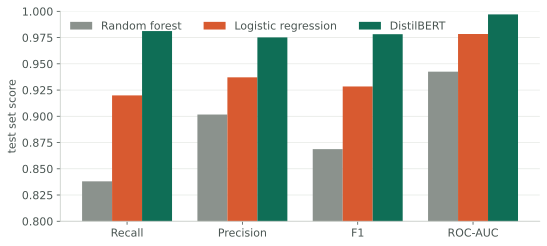
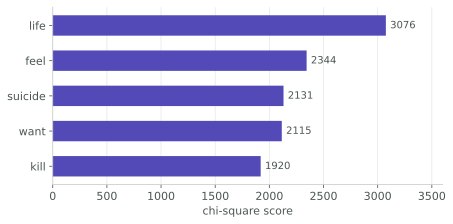

People in crisis often write about it before they tell anyone. A classifier that reads public posts and flags the ones expressing suicidal ideation could put a moderator or a support service in front of someone earlier. I built three of them on 232,074 balanced Reddit posts and compared them properly — a linear baseline, an ensemble, and a fine-tuned transformer.
Deciding what counts as good before measuring anything
Accuracy is the wrong metric here and it is worth being precise about why. A false positive means a moderator reads a post that turned out to be fine. A false negative means someone who was asking for help was not heard. Those two are not the same size of mistake, so a single number that adds them together with equal weight cannot rank these models.
Recall is the criterion, fixed before the results came in. Everything below is reported against it.

On a conventional scoreboard random forest looks respectable — 87% accurate. Counted this way it misses one real case in six. The gap between it and the transformer is not a few points of F1; it is 3,322 people whose posts one model reads and the other does not.
Three models, and what each is for

DistilBERT wins on every metric: 98.1% recall, 97.8% F1, 0.997 AUC. Two epochs of fine-tuning at the standard learning rate, 512-token sequences so long posts are not truncated — and long posts matter here, because distressed writing averages 203 words against 61 for ordinary discourse.
But the linear model is not there to lose. Logistic regression reaches 92% recall at a tiny fraction of the cost, and unlike the transformer it can tell you which words moved the decision. In a setting where a human has to justify acting on a flag, that matters more than three points of recall.
Three ways of choosing features, and a sanity check
I ran all three families deliberately rather than picking one: chi-square as a filter, recursive feature elimination as a wrapper, and Word2Vec as an embedding. They answer different questions — which terms correlate with the label, which terms a model actually leans on, and which terms mean similar things.

The real check came afterwards. The words with positive weight in the linear model were suicide, die, kill, end, pain; the negative ones were lol, fun, happy, friend. That is not a result so much as a reassurance: a model with high scores and nonsensical coefficients is exploiting an artefact, and this one is not. On a task where the output could route a real person to help, I would rather know that than have another point of F1.
The rest of the diligence
Stratified 70/10/20 split. Five-fold cross-validation, which came back within 0.002 of the single-run scores, so the ranking is not a lucky partition. Validation and test F1 within a fifth of a percent for the linear model, so no overfitting. Learning curves that flatten by about 10,000 samples, which says the dataset is comfortably large enough and the remaining error is not something more data would fix.
SMOTE was wired into the pipeline and then did nothing, because the classes were already balanced at 116,037 each. I left the conditional in and reported that it did not fire, which is more useful than quietly removing it — the next person to run this on an unbalanced corpus gets the handling for free.
What it does not do
It reads one post at a time, with no history and no context, and labels from a public dataset are somebody else's judgement of what distress looks like. A system built on this would be a way to get a human to look sooner, not a way to decide anything. That distinction is the whole design constraint, and it is why recall was the metric from the start.